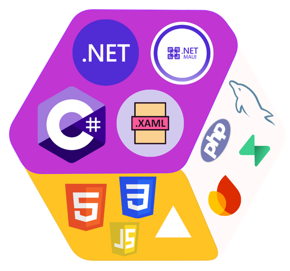
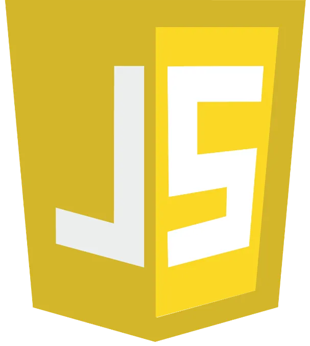
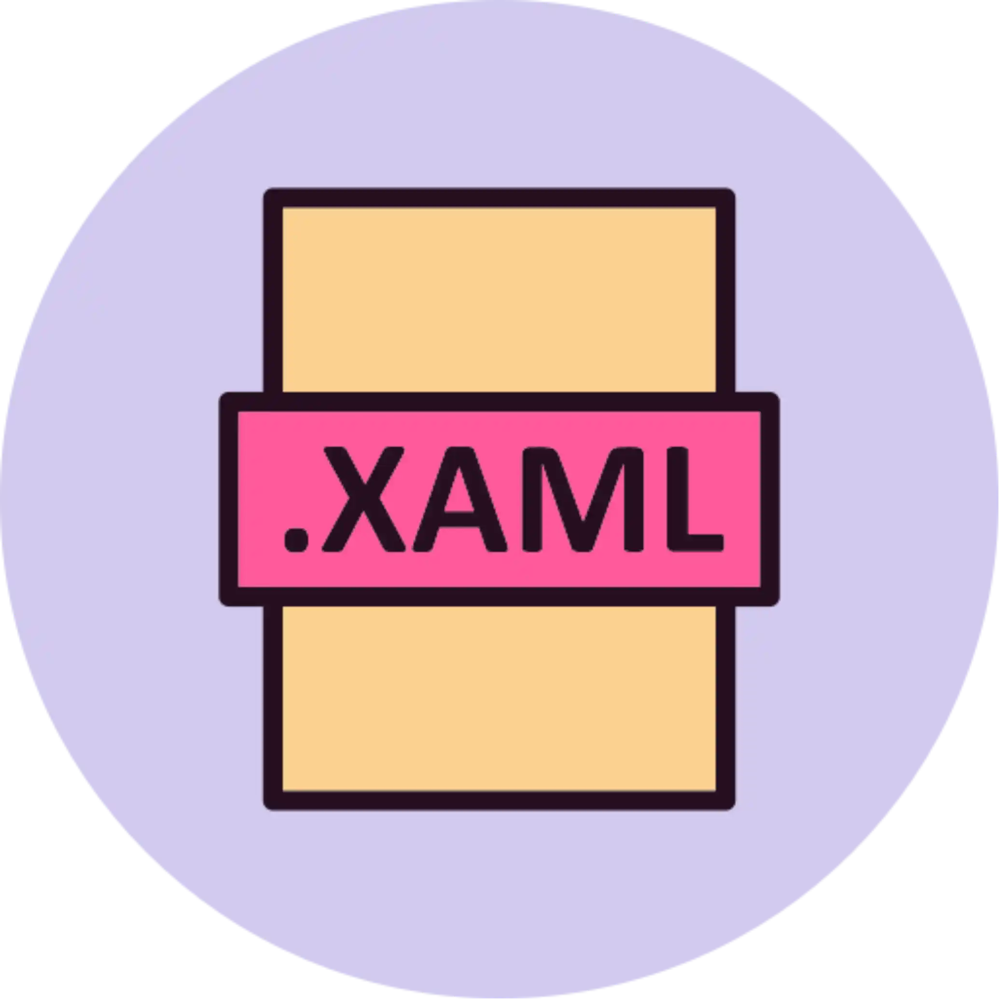
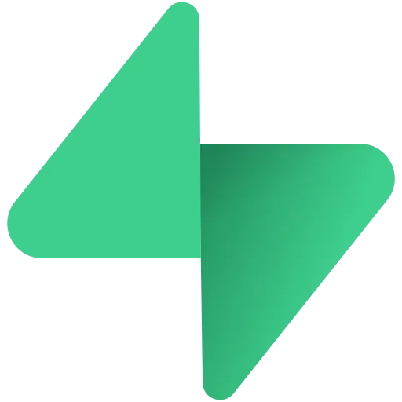

sobre mim
Sou desenvolvedor em formação, com experiência prática no desenvolvimento de aplicações web, desktop
e
mobile. Trabalho com tecnologias como HTML, CSS, JavaScript, PHP, C#, .NET, .NET MAUI, XAML e MySQL.
Ao longo dos meus projetos, desenvolvi sites, aplicações, APIs e sistemas integrados a bancos de
dados.
Também criei minha própria biblioteca de comunicação TCP em C#, voltada à conexão e troca de
informações
entre aplicações cliente e servidor.
Tenho experiência com Git e GitHub para versionamento e organização de projetos. Busco evoluir
constantemente como desenvolvedor, aprofundando meus conhecimentos por meio da prática, da
experimentação e da construção de soluções funcionais.
trajetória do aprendizado

Aqui mostro um pouco de como foi minha evolução na programação, os projetos que eu desenvolvi e as tecnologias que fui aprendendo ao longo do tempo
tecnologias



